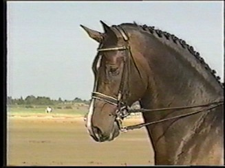
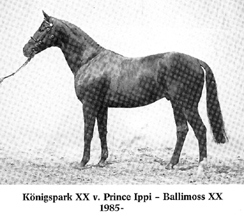

|
1997 Holsteiner Stallion · Coriander x Königspark · Stamm 474 A · 16.3 hands · Dark Bay
Corcovado is the only approved son in the US of the Elite Holsteiner stallion Coriander out of Caletta VII, a State Premium mare by Königspark XX with the sought after stamm 474A. Coriander was Dressage Horse of the Year in Schleswig-Holstein 1994 and a winner at Grand Prix level. Coriander sired 5 approved sons in Holstein (Germany), 10 States-Premium Mares and the 2004 Second Reserve Champion at the Verband Mare Show in Elmshorn (Germany). Corcovado's sire, Coriander is probably best known and respected for producing the quietest minds in Holstein. He ranked as the leading sire of sport horses for all of Germany in his age group three years in a row. He produces elastic movers with deep and effective shoulders. Coriander is included in the elite list of stallions for his consistent production of stallion sons and approved daughters.

Coriander's performance record (from German Holsteiner Verband):
HLP: Jumping talent: 8,0 Trot 8,0, Canter 9,0, Walk 9,0
Off-spring results:
In Holstein 5 approved sons:
Coleman (now owned by Christine Stückelberger, CH), Calambo (HLP-Champion), Chagallo, Cameron and Corlino (Reserve-Champion, now owned by Margit Otto-Crepin)
One of his 10 States-Premium Mares is the 2004 Second Reserve Champion at the Verband Mare Show in Elmshorn, Rose Noir v. Coriander- Cor de la Bryere- Capitol I.
2004: N-LGS 273.182 (106 horses, 5 succesfull in S-DRESSAGE and 6 in S-JUMPING)
Off-spring at the highest level:
Copacabana 12 v. Coriander -
Calambo v. Coriander - Merano - Manitu (Alexandra Simons-de Ridder)
Coriano 2 v. Coriander - (Hans-Jörn Ottens)
Corway v. Coriander - (Jörg Kreutzmann)
Cordial v. Coriander -
Both parents were succesfull in Show-Jumping through the german S-Level
Breeding-index 2004: Dr. 122 (95 %), Jump. 124 (94 %)Corcovado's dam Caletta VII, by Königspark xx is an impressive State Premium Mare who received the top score "9" for "type" at her mare inspection. Caletta VII's dam is VALETTA, by Fernando - Landgraf I. Her sire, Königspark xx is an important TB improvement sire, the sire of the approved stallion Kilian, and in Trakhener breeding, the sire of the stallion performance test winner Hertzruf.
Additional pictures Sire Line:
Additional pictures Dam Line:
